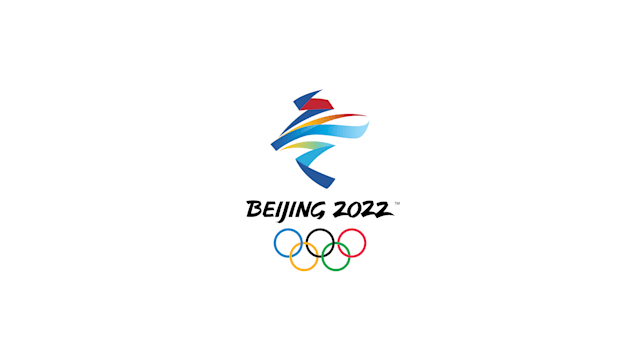

Highlight 1: Skispringen

Beim Skispringen in Beijing 2022 glänzten neue Stars, als die Besten der Welt auf ihrem Weg zum olympischen Ruhm hoch und weit flogen.
Der erste Sieg ging an die Slowenin Ursa Bogataj auf der Normalschanze der Damen, die ein spannendes Comeback benötigte, um sich den Titel zu sichern, nachdem sie nach ihrem ersten Sprung auf Platz zwei lag. Unter großem Druck flog sie 100 Meter durch die Luft, um ihr erstes Olympiagold zu gewinnen.
Auf der Normalschanze der Herren ging der Japaner Kobayashi Ryoyu als Favorit in den Wettkampf und enttäuschte nicht. Mit Sprüngen von 145,4m und 129,6m beendete der Vierschanzentournee-Sieger von 2022 Japans 50-jährige Wartezeit auf eine Goldmedaille auf der Normalschanze.
Am 7. Februar folgte dann eine olympische Premiere im Skispringen, nämlich das Debüt des Mixed-Team-Wettbewerbs. Das slowenische Team, bestehend aus Kriznar, Bogataj, Timi Zajc und Peter Prevc, gewann eine historische Goldmedaille, dicht gefolgt vom ROC und Kanada auf den Plätzen zwei und drei.
Aber das war noch nicht alles.
Auf der Großschanze der Herren sorgte der Norweger Marius Lindvik für eine Überraschung. Er flog am weitesten und schlug den Japaner Kobayashi, der mit seinem letzten Sprung vom ersten Platz auf den Silberrang abrutschte.
Ebenso spannend verlief der letzte Wettkampf der Spiele, als sich die Österreicher mit ihrem letzten Sprung Olympiagold sicherten und den Teamwettbewerb der Herren gewannen.
Medaillenspiegel Skispringen

Zurück zur Startseite